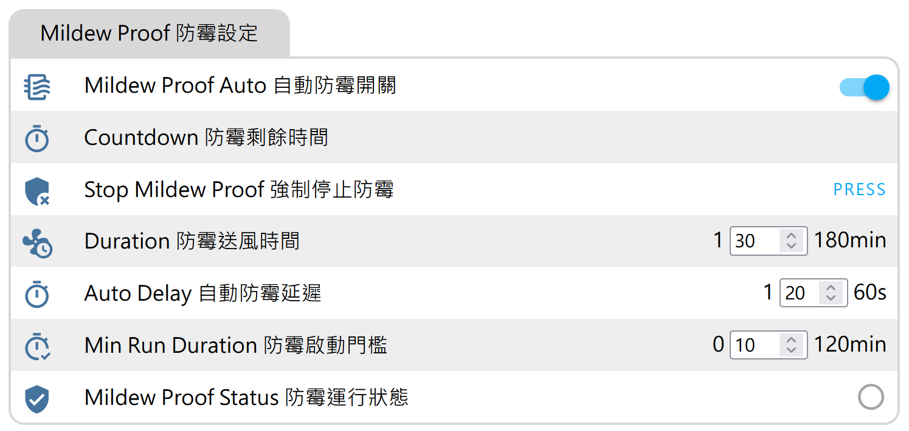

什麼是關機防霉？
「關機防霉」功能會在冷氣關機後，自動將冷氣轉為送風模式（Fan Only），將蒸發器上的水分徹底吹乾，防止異味和黴菌的產生。
此功能可讓您的冷氣避免下次開機時產生討厭的異味。
功能特色
- 關機後自動啟動乾燥運轉，防止蒸發器積水
- 有效抑制細菌、黴菌滋生，減少異味產生
- 保持室內機內部乾燥，延長冷氣使用壽命
- 每次關機後自動執行，無需手動設定
功能畫面

如上圖所示，在控制面板中可看到「關機防霉」選項
實體功能說明
自動防霉開關
名稱：Mildew Proof Auto
功能：這是整個防霉功能的總開關。
- 開啟後：當冷氣關機時，系統會自動偵測並啟動防霉程序
- 關閉後：即使冷氣關機，也不會觸發防霉功能
- 預設狀態：開啟（RESTORE_DEFAULT_ON）
強制停止防霉按鈕
名稱：Stop Mildew Proof
功能：手動強制停止正在運行的防霉程序。
- 當防霉功能正在送風乾燥時，按下此按鈕可立即停止
- 如果在延遲等待期間按下，則會取消延遲啟動
- 使用情境：臨時需要立刻關閉冷氣時使用
防霉送風時間
名稱：Duration
功能：設定防霉送風運轉的持續時間。
- 可設定範圍：1 ~ 180 分鐘
- 預設值：60 分鐘
- 數值會被儲存，重啟後會恢復設定值
自動防霉延遲
名稱：Auto Delay
功能：設定冷氣關機後，等待多久才啟動防霉送風。
- 可設定範圍：1 ~ 60 秒
- 預設值：20 秒
- 用途：避免關機後立即啟動送風造成困擾
防霉啟動門檻
名稱：Min Run Duration
功能：冷氣需運行超過此時間，關機後才會觸發防霉。
- 可設定範圍：0 ~ 120 分鐘
- 預設值：10 分鐘
- 設為 0：關機後立即觸發，不檢查運行時間
- 用途：避免短暫開機關機也觸發防霉，浪費電力
防霉運行狀態
名稱：Mildew Proof Status
功能：顯示防霉功能是否正在運行。
- 顯示「ON」：防霉送風正在運轉中
- 顯示「OFF」：防霉功能目前未啟動
防霉剩餘時間
名稱：Countdown
功能：顯示防霉運轉的剩餘時間倒數。
- 格式：MM:SS（分:秒）
- 防霉結束時顯示：00:00
- 防霉未啟動時顯示：空白
- 更新頻率：每秒更新
運作邏輯
自動防霉觸發流程：
- 確認「自動防霉開關」為開啟狀態
- 偵測到冷氣從運轉狀態變為關機（OFF）
- 檢查冷氣關機前的模式是否在「防霉保護清單」中
- 檢查冷氣運行時間是否超過「防霉啟動門檻」設定
- 等待「自動防霉延遲」設定的秒數
- 冷氣自動切換為送風模式（Fan Only）
- 持續送風「防霉送風時間」設定的分鐘數
- 送風結束後自動關機
保護機制
- 使用者中斷：防霉運行中若使用者手動切換模式（非送風），防霉會立即停止
- 延遲中開機：若在延遲期間使用者重新開啟冷氣，會取消防霉程序
- 異常偵測：若短時間內狀態變更過於頻繁（可能是設備異常），會暫停防霉功能並進入冷卻期
- 冷卻期：異常觸發後需等待 5 分鐘才能重新啟用防霉功能
預設保護模式
預設情況下，以下模式關機後會觸發防霉：
送風模式 (Fan Only) 和關機 (Off) 狀態下不會觸發防霉。
如何使用
本功能所產生的所有實體，都可以在 Home Assistant 的以下位置找到：
- 進入 Home Assistant
- 點擊左側選單的「設定」
- 選擇「裝置與服務」
- 切換到「ESPhome」標籤
- 找到您的冷氣模組並點擊進入
- 即可看到所有防霉相關的實體
HK 版專用：
除了 Home Assistant 外，您也可以直接透過瀏覽器輸入模組 IP 位址（如 http://192.168.1.x），捲動至頁面下方找到「Mildew Proof 防霉設定」區塊進行設定。